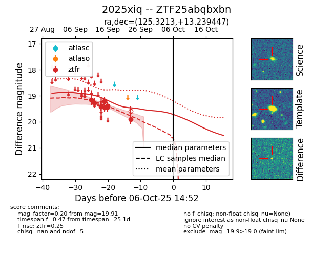
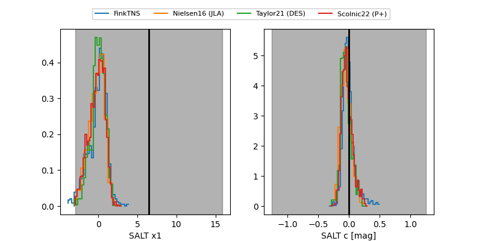

FINK: ZTF25abqbxbn
Lasair: ZTF25abqbxbn
ALeRCE: ZTF25abqbxbn
TNS: 2025xiq
YSE: 2025xiq
ZTF25abqbxbn (ztf,fink)
2025xiq (tns,yse)
equatorial (ra, dec) = (125.3213,+13.23945)
galactic (l, b) = (210.7521,+25.81249)


last ztfr=19.91
9 ztfr detections